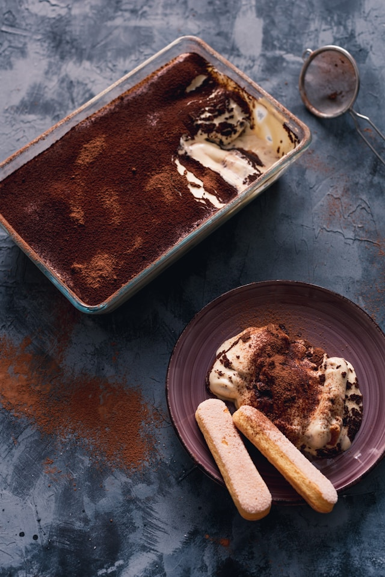

Home
Tiramisu

Description
Tiramisu is a classic Italian dessert made of layers of coffee-soaked ladyfingers,
creamy mascarpone filling, and a dusting of cocoa powder. Its name means "pick-me-up,"
a nod to its espresso base.
This version is simple to prepare yet indulgent, perfect for impressing guests
or treating yourself after a special meal.
Ingredients
- 250g mascarpone cheese
- 200g ladyfingers (savoiardi biscuits)
- 3 large eggs, separated
- 100g granulated sugar
- 200ml strong brewed coffee, cooled
- 2 tbsp coffee liqueur (optional)
- 2 tbsp cocoa powder
- 50ml heavy cream (optional for extra richness)
- Dark chocolate shavings (optional garnish)
Steps
- Brew strong coffee and let it cool. Mix with coffee liqueur if using.
- Whisk egg yolks with sugar until pale and creamy. Fold in mascarpone and whipped cream (if using).
- In a separate bowl, beat egg whites until stiff peaks form. Gently fold them into the mascarpone mixture.
- Quickly dip each ladyfinger into the cooled coffee and arrange in a layer in a dish.
- Spread half of the mascarpone mixture over the ladyfingers. Repeat with another layer of soaked biscuits and cream.
- Dust the top with cocoa powder and chill in the refrigerator for at least 4 hours (overnight is best).
- Before serving, garnish with extra cocoa powder or chocolate shavings.